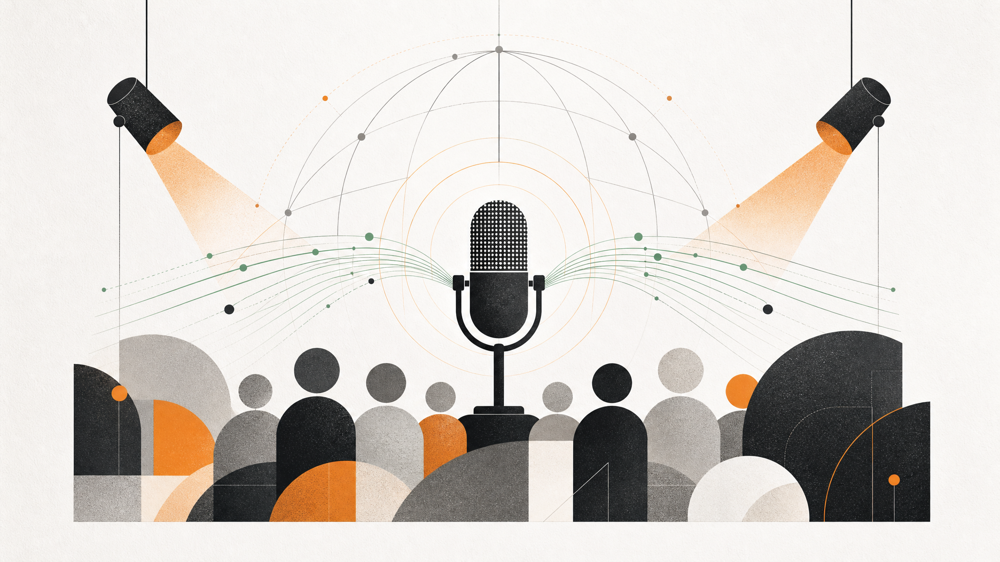
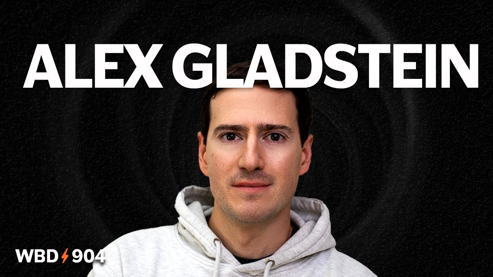
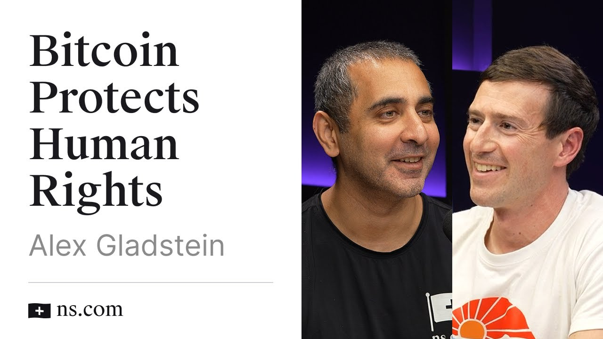
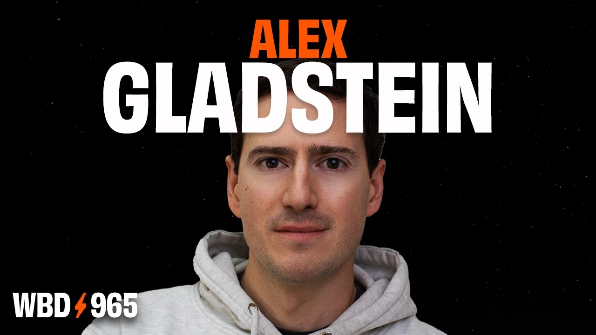
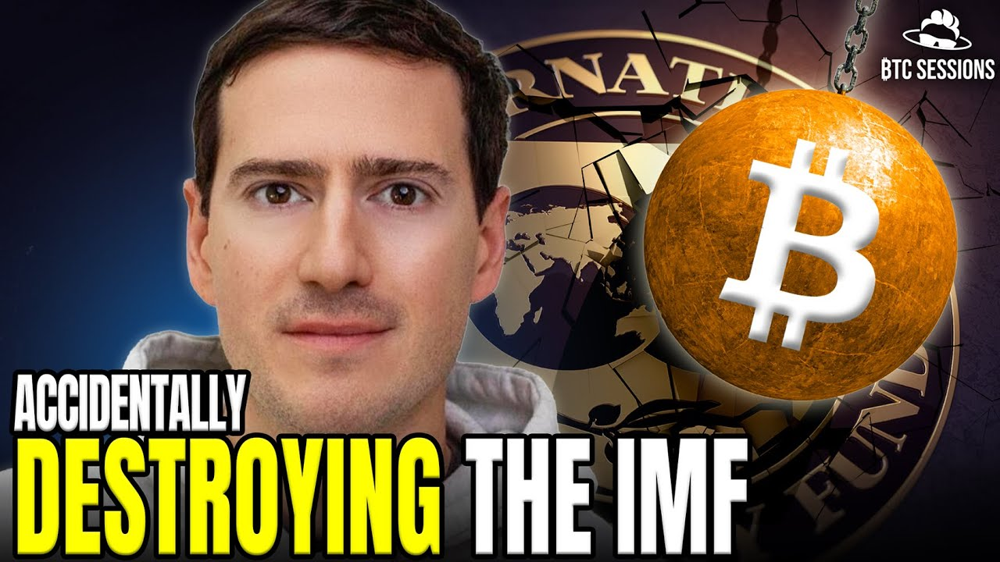

Bitcoin Conference Nashville 2024
Main stage keynote on open money and rights.
Featured Talk
Open ↗
Speaking
Keynotes and lectures from global conferences, universities, and policy forums.
Featured

Main stage keynote on open money and rights.

Long-form talk on adoption and liberty.

Keynote on authoritarian finance and alternatives.
Chronological

Main-stage human-rights panel with Evan Mawarire, Srdja Popovic, Anaise Kanimba, moderated by Alex.
Read more
Talk on Bitcoin as freedom technology for civil society.
Read more
Presentation on debt, institutions, and monetary escape hatches.
Read moreConference interview-style talk on human rights and Bitcoin.
Read moreConference keynote.
Read moreOslo Freedom Forum panel moderated by Alex on practical AI tools for activists.
Read more
Mentor session on global finance and Bitcoin adoption.
Read moreOFF stage introduction connecting AI and civil liberties.
Read moreTalk on nation-state strategy tradeoffs.
Read more
Main-stage talk on Bitcoin utility beyond savings.
Read moreBitcoin Atlantis session with Sarah Kreps and Alex on geopolitics, open money, and rights.
Read moreBitcoin Atlantis stage panel with Farida, Lyn, Jack, and Alex on freedom technology.
Read more
Bitcoin Atlantis panel with Natalie Brunell, Jeff Booth, Jack Dorsey, and Alex.
Read moreTalk on human rights and monetary systems.
Read morePacific Bitcoin solo talk on currency hierarchy, financial privilege, and monetary repression.
Read more
Pacific Bitcoin panel appearance on Bitcoin in a fractured geopolitical order.
Read moreShort-form lecture excerpt on structural monetary inequality.
Read moreTheater talk segment from OFF 2023 programming.
Read more
Archived from legacy alexgladstein.com.
Read moreArchived from legacy alexgladstein.com.
Read moreArchived from legacy alexgladstein.com.
Read more
Keynote on debt colonialism and monetary coercion.
Read moreAfrica Bitcoin Conference panel with Miles Suter, Magatte Wade, Anita Posch, and Alex.
Read moreKyiv conference session with Alex and Mike Brock on Bitcoin, rights, and open finance.
Read more
Archived from legacy alexgladstein.com.
Read moreArchived from legacy alexgladstein.com.
Read moreNarrative talk on activist case studies.
Read more
Trust Conference panel on Bitcoin, blockchain, journalism, and media freedom.
Read moreOslo Freedom Forum panel on Bitcoin, democracy, financial rights, and political systems.
Read moreHosted conference session featuring activists and builders.
Read more
Live event on why Bitcoin matters in the Middle East and under monetary repression.
Read moreLive debate format on democratic governance and Bitcoin.
Read moreShort educational talk segment.
Read more
Talk excerpt on blockchain mechanics and social tradeoffs.
Read moreConference conversation about global financial access.
Read moreLegacy talks post for the Bitcoin 2021 Miami interview event.
Read more
Talk on censorship resistance.
Read moreArchived from legacy alexgladstein.com.
Read moreCasa Keyfest talk on Bitcoin's present and future value for human-rights work.
Read more
Archived from legacy alexgladstein.com.
Read moreTalk on grassroots rights work and financial tools.
Read moreArchived from legacy alexgladstein.com.
Read more
Archived from legacy alexgladstein.com.
Read moreInterview/talk format presentation.
Read moreArchived from legacy alexgladstein.com.
Read more
Long-form talk connecting Bitcoin to human freedom, civil liberties, and financial rights.
Read moreLegacy talks post and video/interview embed.
Read moreLegacy talks post for a rights-focused Bitcoin talk.
Read more
Stage/video appearance on authoritarianism, censorship, and public-health failures.
Read moreLegacy conference talk post from 2019.
Read moreBitcoin Sydney talk on surveillance, financial rights, and Bitcoin as anti-authoritarian technology.
Read more
Legacy talks post covering the Slush talk.
Read moreStage moment on open financial tools and human rights.
Read moreSingularityU Czech Summit talk on democracy, rights, and technological change.
Read more
Legacy talk listing on crypto in developing countries.
Read moreLegacy talk entry on governance and technology.
Read moreLegacy talks post on anti-authoritarian technology.
Read more
Early talk framing Bitcoin through a rights lens.
Read moreLegacy talks post on surveillance platforms and decentralization.
Read moreLegacy talks post on technology and press freedom.
Read more
SingularityU South Africa talk on technology, open societies, and human-rights work.
Read moreLegacy talk entry from SXSW media freedom programming.
Read moreLegacy talk entry on information access and civil society.
Read more
Lecture on outside information, media smuggling, and strategies for North Korean freedom.
Read moreSVA event talk on Human Rights Foundation work and institutional human-rights strategy.
Read more